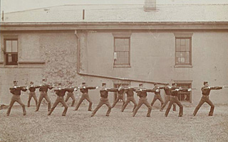

Castle Williams was put to use as a military prison for captured Confederate enlisted men and Union deserters. More than 1,000 men were crammed into the structure and forced to live in dreadfully unsanitary conditions. Many suffered from sickness and disease in the open-air facility, which was not covered or protected from the elements. The conditions prompted Orderly Sergeant Andrew Norman of the 7th Regiment, North Carolina Volunteers, to send a desperate letter to the U.S. Secretary of War Simon Cameron, begging for action.
Fort Jay housed Confederate officers who were captured in battle. The enlisted men of the CSA were kept confined in Castle Williams; the officers were allowed to visit the men. During the Civil War, executions were held on the shore, in an elaborate ceremony that featured the condemned falling into his own coffin after facing a firing squad of 12 soldiers.
The island itself came under attack during the Draft Riots of 1863. At the outset of the rioting, troops from Governors Island had been stationed at the Sub-Treasury building on Wall Street. The rioters seized this opportunity to raid the island's ammunition stores, but were thwarted when workers of the Ordnance Department turned their guns on the approaching rioters, who rowed back to New York.
In 1870 a yellow fever epidemic swept Governors Island, and the entire island was placed under quarantine. In August 1870, 172 cases were reported and the small post hospital was overwhelmed. Evacuating all of the sick to quarantine hospitals on Staten Island only halted the epidemic. Among the scores who succumbed to the disease were Chaplain Alexander Davidson and his assistant. Early in 1871, the barracks where the sick soldiers had quartered, called "Rotten Row," were demolished.
The Headquarters of the Military Division of the Atlantic and the Department of the East moved to the island in 1878. Major General Winfield Scott Hancock (1824-1886) arrived, commander of the Department of the East. Wounded at Gettysburg during Pickett's charge, General Hancock was one of the most respected men of the era. He started a renaissance on Governors Island and made lasting improvements that are still important today. General Hancock asked for a substantial appropriation from Congress to make improvements to the facilities on the island. General Hancock ordered unsightly and unsafe wooden structures razed. He ordered the Army to purchase a steamer from the Cunard Line, the Atlantic, to provide free ferry service to and from Manhattan.
Two years after General Hancock arrived, he ran unsuccessfully for president as the Democratic candidate facing James Garfield, the only time an active duty U.S. Army officer ran for the White House. General Hancock returned to the island after the campaign and began major capital improvements to the post. He pushed the Army to run water pipes underneath the Buttermilk Channel and tap fresh city water from Brooklyn. He built a new post hospital and installed kerosene lamps on the island. General Hancock died at Fort Jay on February 9, 1886. Hancock Park in Harlem was dedicated in his honor in 1893.

Soldiers at drill, 1898 (Library of Congress)
In 1894 the post became a garrison for the 13th Infantry Regiment. In 1898 they shipped out to fight in the Spanish-American War in Cuba, and participated in the charge of San Juan Hill. The unit was also sent to fight in the Philippine-American War (1899-1902). During this era Colonel's Row was erected in 1893 and the brick houses of Regimental Row were constructed soon afterward. During stormy weather along the South Shore, the brick houses got soaked with ocean spray; the sea came up to where the park is today along Hay Road.
On New Year's Eve 1899, infantry buglers blew "Taps" for the dying century at midnight from Fort Jay.